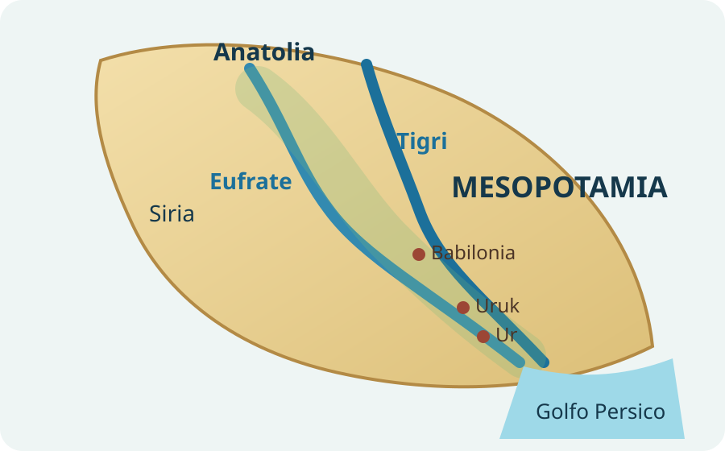
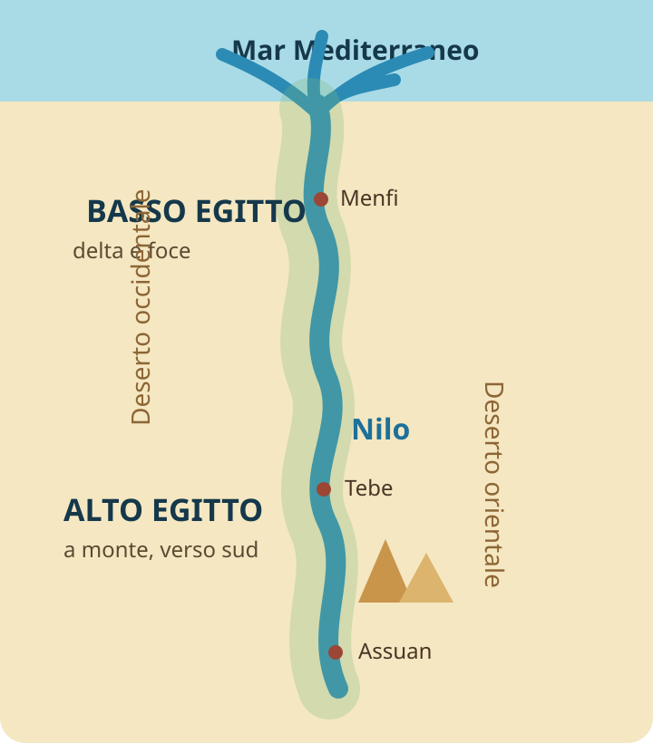

TESTO
Che cosa vediamo? Qual è il fatto storico da osservare?
Unità 1 · Nascita delle civiltà organizzate
Due fiumi, due mondi. Mesopotamia ed Egitto partono da problemi simili — acqua, agricoltura, surplus, organizzazione — ma costruiscono risposte politiche diverse.
Il metodo storico
Non impariamo una lista di nomi. Cerchiamo di capire perché una società cambia.
Che cosa vediamo? Qual è il fatto storico da osservare?
Che cosa è accaduto prima e ha reso possibile quel fatto?
Dove accade? Quali risorse, limiti e rapporti danno significato al fatto?
Rimettiamo insieme i pezzi e costruiamo una spiegazione storica.
Lezione 1
Che cosa succede quando vivere dipende dall’acqua e l’acqua deve essere organizzata?
Nelle pianure fra Tigri ed Eufrate sorgono grandi centri come Uruk e Ur. Intorno alle città si estendono campi irrigati; al centro si concentrano templi, magazzini e attività artigianali.
Una parte della popolazione non coltiva più direttamente la terra: compaiono artigiani, mercanti, soldati, sacerdoti, funzionari e scribi.
Per millenni le comunità del Vicino Oriente avevano imparato a coltivare, allevare e vivere in villaggi stabili. L’agricoltura può produrre più cibo del necessario: il surplus.
Quel surplus permette di mantenere persone dedicate ad altri compiti. È la premessa della specializzazione del lavoro e della crescita urbana.

Controllare l’acqua favorisce cooperazione e comando. Il surplus viene raccolto nei magazzini; tempio e palazzo diventano centri economici e politici. Più la società cresce, più ha bisogno di registrare tributi, scambi e decisioni.
Verso la fine del IV millennio a.C. compaiono sistemi che evolvono nella scrittura cuneiforme. Le prime registrazioni servono spesso a contare merci, animali, razioni e tributi.
Una società complessa ha bisogno di una memoria esterna.
Crescita di grandi città nella Mesopotamia meridionale: fase di Uruk.
Schema-mappa
Lezione 2
Come può una lunga striscia di terra fertile trasformarsi in un unico grande Stato?
Il faraone è al vertice del potere; funzionari e scribi amministrano le risorse; i contadini lavorano i campi; sacerdoti e templi hanno un ruolo religioso ed economico.
Scrittura geroglifica, opere idrauliche e monumenti mostrano una capacità di organizzazione che coinvolge un territorio vasto.
Esistono comunità agricole e due grandi aree politiche: Alto Egitto, a sud e a monte del fiume, e Basso Egitto, a nord, nel delta.
Intorno al 3100 a.C. vengono unificate. La tradizione collega questa svolta al sovrano Narmer.

Le eccedenze agricole vengono tassate e accumulate; funzionari e scribi controllano lavori, magazzini e tributi. Il faraone concentra potere politico e religioso e garantisce simbolicamente l’ordine del regno.
Gli Egizi immaginano la morte come un passaggio verso un’altra esistenza. Da qui derivano mummificazione e tombe monumentali.
Le piramidi sono anche un segno politico: mostrano la capacità dello Stato di mobilitare risorse, tecnici e lavoratori.
La scrittura geroglifica viene usata in ambito religioso, monumentale e amministrativo. Gli scribi trasformano raccolti, tasse, ordini e proprietà in informazioni controllabili.
Governare un territorio significa anche raccogliere e conservare informazioni.
Unificazione dell’Alto e del Basso Egitto; inizio dell’età dinastica.
Schema-mappa
Ricompone le due lezioni
Non basta dire che sono “civiltà fluviali”. Il punto storico è capire che cosa costruiscono a partire da condizioni simili.
| Domanda | Mesopotamia | Egitto |
|---|---|---|
| Fiumi | Tigri ed Eufrate | Nilo |
| Territorio | Pianura aperta, più esposta a spostamenti e conflitti | Valle stretta, in parte protetta dai deserti |
| Politica | Molte città-Stato; poi regni e imperi | Precoce tendenza a uno Stato unitario |
| Potere | Templi, re, palazzi; forme diverse nel tempo | Faraone al vertice politico e religioso |
| Scrittura | Cuneiforme | Geroglifica e altre forme |
| Elemento comune | Surplus + amministrazione + lavoro specializzato | Surplus + amministrazione + lavoro specializzato |
Le prime civiltà non nascono perché «arriva improvvisamente il progresso». Nascono quando comunità agricole diventano abbastanza complesse da dover organizzare produzione, acqua, lavoro, conflitti, religione, potere e memoria.
Verifica e recupero
Ogni domanda vale 1 punto. A ogni nuovo tentativo cambiano l’ordine delle domande e delle risposte. Alla fine ricevi voto, report e una mini-lezione di recupero per ogni errore.